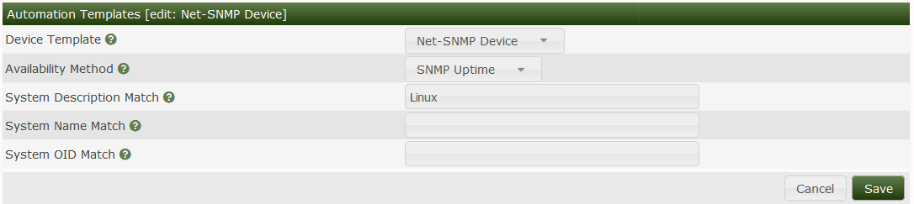

This section will describe Device Rules in Cacti.
Cacti Automation relies on create device Rules these rules help the automation process figure out what type of device is being scanned. Based on the device rule REGEX the automation engine can apply the appropriate template to the device i.e if there is a REGEX for IOS. The automation engine may pick the Cisco router template for the device.
Below you will be able to choose a REGEX that will help identify the device the REGEX can be in any Perl supported format. You can select either to match by system description i.e the device hostname or the system name i.e Cisco.
An example regex for Cisco would be (Cisco Internetwork Operating System Software|IOS) This matches based on the system name of the Cisco IOS software.
Using this info automation would apply the appropriate device template you choose. If you see below we match for a system that matches Linux once a device is found with that system name it is assigned the Net-SNMP device template.

If the System/Device you are matching has a unique OID you can also match based on that.
Copyright (c) 2004-2024 The Cacti Group